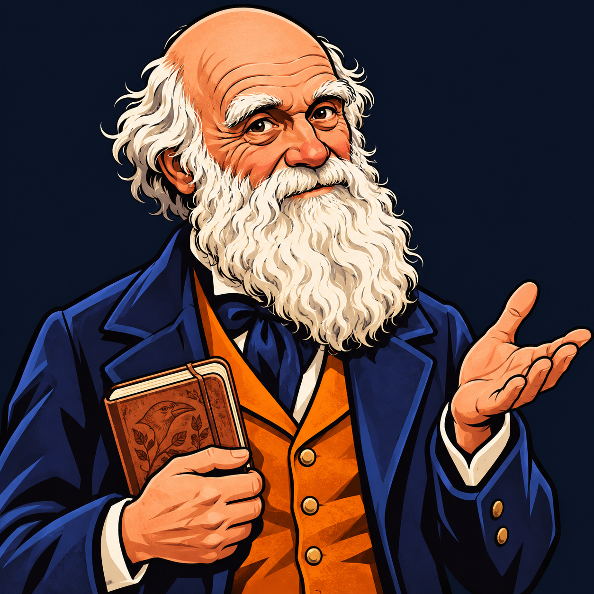

CAPTURE. OBSERVE. INVESTIGUE. · VERSÃO 7
Você caça.
A população evolui?
Uma corrida entre predação e reprodução.
Descubra o que as cores revelam sobre a seleção natural.
VOCÊ É O PREDADOR
Consegue encontrar todos?
Clique ou toque nos círculos. Os sobreviventes
geram descendentes com cores herdadas.
POPULAÇÃO0
CAPTURAS0
NASCIMENTOS0
TEMPO RESTANTE60s
RASTROS DA SELEÇÃO
As cores contam uma história.
Cada linha mostra a porcentagem de um tom na população ao longo do tempo. Compare o início e o fim.
Inicie uma partida para acompanhar a população.

DARWIN ANALISA O GRÁFICO DE LINHAS
Vamos ler as evidências?
01 / O que mudou ao longo do tempo
02 / Como ler o gráfico de linhas
03 / Por que os nascimentos podem parar?
AGORA, O RETRATO FINAL
Quantos de cada tom restaram?
A cor de um indivíduo permanece a mesma. A população pode evoluir quando características herdáveis mudam de frequência entre gerações. Aqui, a reprodução é simplificada: cada organismo gera um descendente, sem parceiro.